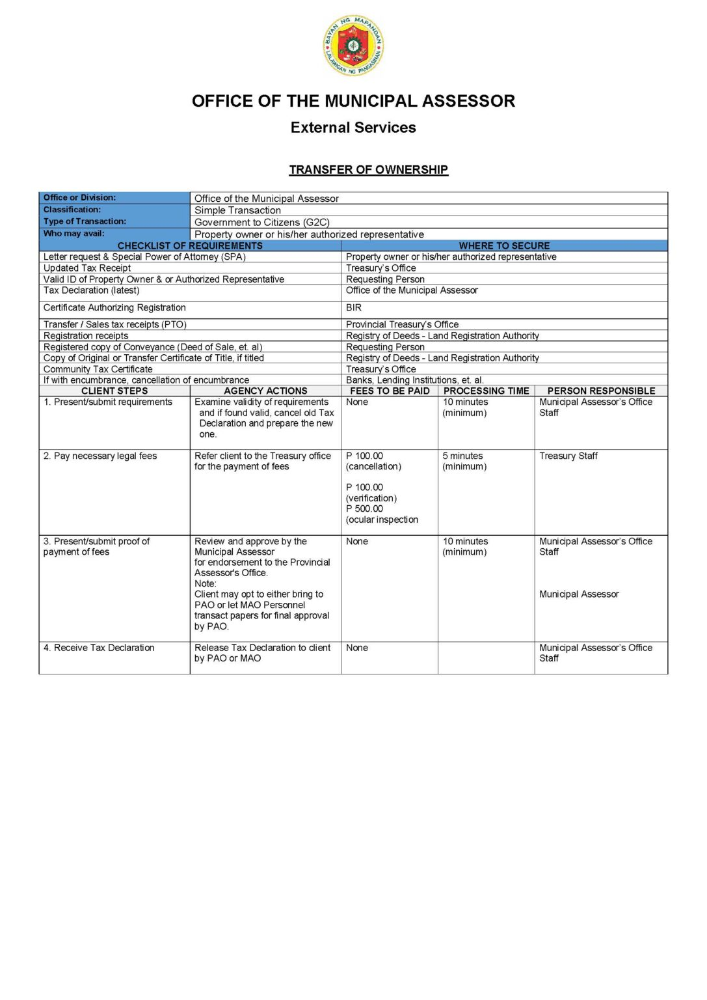

Real Property & Revenue
Transfer of Land Ownership
Transfer land ownership in Mapandan at the Assessor's Office. ₱150 recording fee, 30 minutes for Assessor processing.
Description
Transfer of land ownership is the legal process of transferring property rights from one owner to another. The Municipal Assessor's Office (MASSO) records the transfer and updates the Tax Declaration under the new owner's name. The client first secures a tax clearance from the Treasury Office, then submits the transfer documents to the Assessor's Office. The Assessor records the transaction, cancels the old Tax Declaration, and issues a new one. Fee: ₱150 for recording.
Requirements
- Deed of Sale, Deed of Donation, or other proof of transfer
- Tax Clearance from the Municipal Treasurer's Office
- Certified True Copy of Tax Declaration (from Assessor's Office)
- Valid Government-issued ID of the new owner
- BIR Certificate of Registration (if applicable)
Procedure
- Secure a Tax Clearance from the Municipal Treasurer's Office.
- Obtain a Certified True Copy of the Tax Declaration from the Assessor's Office.
- Submit all required documents to the Assessor's Office.
- Assessor reviews and records the transfer (15 min).
- Assessor cancels the old Tax Declaration and prepares the new one (10 min).
- Pay ₱150 recording fee at the Treasury Office.
- Claim the new Tax Declaration under the new owner's name (5 min).
Scanned Document
Scanned page from the official Mapandan Citizen's Charter listing the requirements, fees, processing time, and responsible staff for the service.
